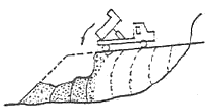
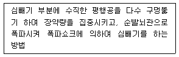
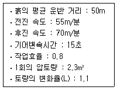
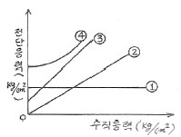
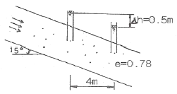
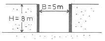
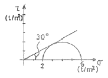
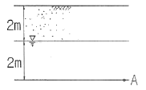
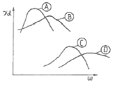

건설재료시험기사 (2012-03-04 기출문제)
1과목: 콘크리트공학
1. 숏크리트(Shotcrete)시공에 대한 주의사항으로 잘못된 것은?
- 대기 온도가 10℃ 이상일 때 뿜어붙이기를 실시하며, 그 이하의 온도일 때는 적절한 온도대책을 세운 후 실시한다.
- 숏크리트는 빠르게 운반하고, 급결제를 첨가한 후는 바로 뿜어붙이기 작업을 실시하여야 한다.
- 숏크리트 작업에서 반발량이 최소가 되도록 하고, 리바운드된 재료는 즉시 혼합하여 사용하여야 한다.
- 숏크리트는 뿜어붙인 콘크리트가 흘러내리지 않는 범위의 적당한 두께를 뿜어붙이고, 소정의 두께가 될때까지 반복해서 뿜어붙여야 한다.
(정답률: 81%)

2. 콘크리트의 동결융해에 대한 설명 중 틀린 것은?
- 다공질의 골재를 사용한 콘크리트는 일반적으로 동결융해에 대한 저항성이 떨어진다.
- 콘크리트의 표층박리(scaling)는 동결융해작용에 의한 피해의 일종이다.
- 동결융해에 의한 콘크리트의 피해는 콘크리트가 물로 포화되었을 때 가장 크다.
- 콘크리트의 초기 동결융해에 대한 저항성을 높이기 위해서는 물-시멘트비를 크게 한다.
(정답률: 84%)
3. S-N 곡선은 콘크리트의 어떤 성질을 나타내는 데사용되는가?
- 피로
- 부착강도
- 크리프
- 충격강도
(정답률: 74%)
4. 설계기준 압축강도가 28MPa 이고, 15회의 압축강도시험으로부터 구한 표준편차가 3.0MPa일 때 콘크리트의 배합강도를 구하면?
- 29.3MPa
- 32.1MPa
- 32.7MPa
- 36.5MPa
(정답률: 67%)
5. 굳지 않은 콘크리트 중의 전 염소이온량은 원칙적으로 몇 kg/m3이하로 하는 것으로 표준으로 하는가?
- 0.20kg/m3
- 0.30kg/m3
- 0.50kg/m3
- 0.70kg/m3
(정답률: 85%)
6. 한중 콘크리트에서 주위의 기온이 영하 6℃, 비볐을때의 콘크리트의 온도가 15℃, 비빈 후부터 타설이 끝났을 때까지의 시간은 2시간이 소요되었다면 콘크리트 타설이 끝났을 때의 콘크리트 온도는 얼마인가?
- 6.7℃
- 7.2℃
- 7.8℃
- 8.7℃
(정답률: 75%)
7. 공기연행 콘크리트의 공기량에 대한 설명으로 옳은 것은? (단, 굵은 골재의 최대치수는 40mm를 사용한 일반콘크리트로서 보통 노출인 경우)
- 4.0%를 표준으로 하며, 그 허용오차는 ±1.0%로 한다.
- 4.5%를 표준으로 하며, 그 허용오차는 ±1.0%로 한다.
- 4.0%를 표준으로 하며, 그 허용오차는 ±1.5%로 한다.
- 4.5%를 표준으로 하며, 그 허용오차는 ±1.5%로 한다.
(정답률: 83%)
8. 수중콘크리트 타설에 대한 설명으로 틀린 것은?
- 콘크리트를 수중에 낙하시키면 재료분리가 일어나고 시멘트가 유실되기 때문에 콘크리트는 수중에 낙하시켜서는 안 된다.
- 대규모 공사나 중요한 구조물의 경우 밑열림 상자를 이용하여 콘크리트의 연속시공이 가능하도록 해야한다.
- 콘크리트 면을 가능한 한 수평하게 유지하면서 소정의 높이 또는 수면 상에 이를 때까지 연속해서 타설해야 한다.
- 한 구획의 콘크리트 타설을 완료한 후 레이턴스를 모두 제거하고 다시 타설하여야 한다.
(정답률: 85%)
9. 시방배합상의 잔골재의 양은 500kg/m3이고 굵은골재의 양은 1000kg/m3이다. 표면수량은 각각 5%와 3%이었다. 현장배합으로 환산한 잔골재와 굵은골재의 양은?
- 잔골재 : 525kg/m3, 굵은골재 1030kg/m3
- 잔골재 : 475kg/m3, 굵은골재 970kg/m3
- 잔골재 : 470kg/m3, 굵은골재 975kg/m3
- 잔골재 : 520kg/m3, 굵은골재 1025kg/m3
(정답률: 75%)
10. 콘크리트의 초기균열 중 콘크리트 표면수의 증발속도가 블리딩 속도보다 빠른 경우와 같이 급속한 수분 증발이 일어나는 경우 발생하기 쉬운 균열은?
- 거푸집 변형에 의한 균열
- 침하수축균열
- 소성수축균열
- 건조수축균열
(정답률: 67%)
11. 일반 콘크리트의 타설 및 다지기에 관한 설명으로 옳은 것은?
- 타설한 콘크리트를 거푸집안에서 횡방향으로 원활히 이동시켜야 한다.
- 슈트, 펌프배관 등의 배출구와 타설면까지의 높이는 1.5m 이상을 원칙으로 한다.
- 깊은 보와 두꺼운 벽 등 부재가 두꺼운 경우 거푸집 진동기의 사용을 원칙으로 한다.
- 2층으로 나누어 타설할 경우 상층의 콘크리트 타설은 원칙적으로 하층의 콘크리트가 굳기 시작하기 전에 해야 한다.
(정답률: 66%)
12. 콘크리트 시방배합설계에서 단위수량 166kg/m3, 물-시멘트비가 39.4% 이고, 시멘트비중 3.15, 공기량 1.0%로 하는 경우 골재의 절대용적은?
- 0.690 m3
- 0.620 m3
- 0.580 m3
- 0.310 m3
(정답률: 77%)
13. 쪼갬인장강도시험으로부터 최대하중 P=100kN을 얻었다. 원주 공시체의 직경이 100mm, 길이가 200mm 이라고 하면 이 공시체의 쪼갬인장강도는?
- 1.27MPa
- 1.59MPa
- 3.18MPa
- 6.36MPa
(정답률: 74%)
14. 콘크리트 휨 강도 시험에 대한 설명으로 틀린 것은?
- 공시체 한 변의 길이는 굵은 골재 최대치수의 4배 이상이며, 10cm 이상으로 하여야 한다.
- 공시체의 길이는 단면의 한 변의 길이의 3배도 8cm 이상 긴 것으로 한다.
- 공시체에 하중을 가하는 속도는 가장자리 응력도의 증가율이 매초 0.6±0.4MPa이 되도록 조정하여야 한다.
- 공시체가 인장쪽 표면의 지간 방향 중심선의 3등 분점의 바깥쪽에서 파괴된 경우는 그 시험 결과를 무효로 한다.
(정답률: 78%)
15. 콘크리트 혼합시 각 재료 계량의 최대 허용오차 값으로 틀린 것은?
- 물 : 1%
- 시멘트 : 1%
- 혼화제 : 2%
- 골재 : 3%
(정답률: 82%)
16. 결합재로 시멘트와 시멘트 혼화용 폴리머(또는 폴리머 혼화제)를 사용한 콘크리트는?
- 폴리머 시멘트 콘크리트
- 폴리머 함침 콘크리트
- 폴리머 콘크리트
- 레진 콘크리트
(정답률: 90%)
17. 프리스트레스트 콘크리트의 원리를 설명하는 3가지 방법에 속하지 않는 것은?
- 균등질 보의 개념
- 내력 모멘트의 개념
- 모멘트 분배의 개념
- 하중평형의 개념
(정답률: 72%)
18. 다음 중 콘크리트의 크리프에 대한 설명으로 잘못된 것은?
- 콘크리트의 크리프란 일정한 지속응력하에 있는 콘크리트의 시간적인 소성변형을 말한다.
- 일반적으로 콘크리트의 크리프는 지속응력이 클수록 크게 된다.
- 조강 시멘트를 사용한 콘크리트는 보통 시멘트를 사용한 경우보다 크리프가 작다.
- 배합시 시멘트량이 많을수록 크리프가 작다.
(정답률: 70%)
19. 프리스트레스트 콘크리트에 대한 설명으로 틀린 것은?
- 프리텐션 방식으로 프리스트레싱할 때 콘크리트의 압축강도는 30MPa 이상이어야 한다.
- 프리스트레스트 콘크리트그라우트의 물-결합재비는 45% 이하로 하여야 한다.
- 프리스트레싱할 때 긴장재에 인장력을 설계값 이상으로 주었다가 다시 설계값으로 낮추는 방법으로 시공하여야 한다.
- 굵은 골재의 최대 치수는 보통의 경우 25mm를 표준으로 한다.
(정답률: 88%)
20. 콘크리트 양생방법 중 고압증기양생에 대한 설명으로 틀린 것은?
- 고압증기양생을 실시하면 보통양생에 비해 철근의 부착강도가 약 2배 정도로 향상된다.
- 고압증기양생은 치밀하고, 내구성이 있는 양질의 콘크리트를 만든다.
- 고압증기양생을 실시한 콘크리트의 외관은 보통양생한 포틀랜트시멘트 콘크리트 색의 특징과 다르며, 흰색을 띤다.
- 고압증기양생 기간에서 가열속도가 너무 빠르면 응결ㆍ경화과정에서 해를 발생시킬 수 있으므로 빨라지지 않도록 하는 것이 좋다.
(정답률: 83%)
2과목: 건설시공 및 관리
21. CPM(critical path method)에 관한 설명 중 옳지 않은 것은?
- 반복사업, 경험이 있는 사업 등에 이용
- 3점 시간 추정
- 요소작업 중심의 일정계산
- 공비절감을 주목적으로 한다.
(정답률: 76%)
22. 관암거의 직경이 20cm, 유속이 0.6m/sec, 암거길이가 300m일 때 원활한 배수를 위한 암거낙차를 구하면? (단, Giesler의 공식을 사용하시오.)
- 0.86m
- 1.35m
- 1.84m
- 2.24m
(정답률: 56%)
23. 교량에서 좌우의 주형을 연결하여 구조물의 횡방향 지지, 교량 단면형상의 유지, 강성의 확보, 횡하중의 받침부로의 원활한 전달 등을 위해서 설치하는 것은?
- 교좌
- 바닥판
- 브레이싱
- 바닥틀
(정답률: 78%)
24. 옹벽 등 구조물의 뒤채움 재료에 대한 조건으로 틀린 것은?
- 압축성이 좋아야 한다.
- 투수성이 있어야 한다.
- 다짐이 양호해야 한다.
- 물의 침입에 의한 강도 저하가 적어야 한다.
(정답률: 79%)
25. 흙의 성토작업에서 아래 그림과 같은 쌓기 방법은?

- 전방층 쌓기
- 수평층 쌓기
- 물다짐 공법
- 비계층 쌓기
(정답률: 89%)
26. 오픈케이슨의 거치방법 중 수심 5m이하의 경우 가장 안전한 공법은?
- 축도법
- 비계식
- 예항식
- 부동식
(정답률: 53%)
27. 0.7m3의 백호 1대를 사용하여 15000m3의 기초굴착을 시행할 때 굴착에 요하는 일수는? (단, 백호의 사이클 타임은 0.4min, dipper 계수는 0.9, 토량 변화율은 1.2, 작업 능률은 0.8, 1일의 운전기산은 8시간이다.)
- 20일
- 23일
- 27일
- 30일
(정답률: 55%)
28. 네트워크 관리도 작성의 기본원칙 가운데 모든 공정은 각각 독립공정으로 간주하며, 모든 공정은 의무적으로 수행되어야 한다는 원칙은?
- 공정원칙
- 단계원칙
- 활동원칙
- 연결원칙
(정답률: 69%)
29. PSC 교량가설공법과 시공상의 특징에 대한 설명이 적절하지 않은 것은?
- 연속압축공법(ILM) : 시공부위의 모멘트감소를 위해 steel nose(추진코) 사용
- 동바리공법(FSM) : 콘크리트 치기를 하는 경간에 동바리를 설치하여 자중 등의 하중을 일시적으로 동바리가 지지하는 방식
- 캔틸레버공법(FCM) : 교량외부의 제작장에서 일정 길이 만큼 제작후 연결시공
- 이동식 비계공법(MSS) : 교각위에 브래킷 설치후 그 위를 이동하며 콘크리트 타설
(정답률: 70%)
30. 암질이 좋고 큰 터널공사에서 전단면 굴착에 가장 효율적인 건설기계는?
- Stopper 착암기(drill)
- Jumbo drill
- Rock drill
- Sinker
(정답률: 76%)
31. 항타말뚝은 주로 해머를 이용하여 말뚝을 지반에 근입시킨다. 다음 중 항타말뚝에 사용되는 디젤해머의 특징에 대한 설명으로 잘못된 것은?
- 취급이 비교적 간단하다.
- 부대설비가 적어 작업성과 기동성이 있다.
- 연약지반에 매우 유용하다.
- 배기가스 및 소음공해가 있다.
(정답률: 65%)
32. 아래의 표에서 설명하고 있는 심빼기 발파공의 명칭은?

- 번 컷
- 스윙 컷
- 피라미드 컷
- 노 컷
(정답률: 41%)
33. 도로주행중 노면의 한 개소를 차량이 집중 통과하여 표면의 재료가 마모되고 유동을 일으켜서 노면이얕게 패인자국을 무엇이라고 하는가?
- 플러시(Flush)
- 러팅(Rutting)
- 블로업(Blow up)
- 블랙베이스(Black base)
(정답률: 75%)
34. 터널굴착공법 중 쉴드(shield)공법의 장점으로서 옳지 않는 것은?
- 밤과 낮에 관계없이 작업이 가능하다.
- 지하의 깊은 곳에서 시공이 가능하다.
- 소음과 진동의 발생이 적다.
- 지질과 지하수위에 관계없이 시공이 가능하다.
(정답률: 68%)
35. 다음 중 록필댐의 일반적인 구조 형식에 해당하지 않는 것은?
- 전면차수벽 형식
- 아치 형식
- 중앙심벽 형식
- 복합체 형식
(정답률: 55%)
36. 콘크리트 포장의 일반적인 특성으로 옳지 않은 것은?
- 콘크리트 슬래브가 교통하중을 휨 저항으로 지지한다.
- 아스팔트 포장과 비교하여 유지 및 보수비가 비교적 싸다.
- 아스팔트 포장과 비교하여 국부적 파손에 대한 보수가 용이하다.
- 아스팔트 포장과 비교하여 내구성이 좋다.
(정답률: 67%)
37. 방파제를 크게 보통방파제와 특수방파제로 분류할때 다음 중 특수방파제에 속하지 않는 것은?
- 공기방파제
- 부양방파제
- 잠수방파제
- 콘크리트 단괴식 방파제
(정답률: 50%)
38. 표준암에 대한 천공속도가 45cm/min인 착암기를 써서 암반을 천공할 때 천공길이가 3m이다. 한시간당 한대가 약 몇 개를 천공할 수 있는가? (단, α = 0.65, 표준암에 대한 대상암의 저항력 계수 C1 = 1.0, 암반에 따른 계수 C2 = 0.85이다.)
- 5
- 12
- 25
- 50
(정답률: 49%)
39. 추의 중량이 2500kg이고 낙하고 2.5m라 할 때 말뚝의 허용 지지력이 20t 이 되려면 최종 침하량은 얼마이어야 하는가? (단, Sander 공식을 사용하며, 안전율은 8을 적용한다.)
- 2.12cm
- 3.12cm
- 3.91cm
- 4.⑤cm
(정답률: 52%)
40. 불도저로 토공 작업을 하는 현장에서 다음과 같은 작업조건일 때 불도저의 시간당 작업량을 본바닥 토량으로 계산하면?

- 125.5m3/h
- 97.2m3/h
- 64.9m3/h
- 53.6m3/h
(정답률: 65%)
3과목: 건설재료 및 시험
41. 스트레이트 아스팔트에 대한 설명 중 틀린 것은?
- 블론 아스팔트에 비해 투수계수가 크다.
- 블론 아스팔트에 비해 신장성이 크다.
- 블론 아스팔트에 비해 점착성이 크다.
- 블론 아스팔트에 비해 온도에 대한 감온성이 크다.
(정답률: 39%)
42. 콘크리트용 혼화재료로 사용되는 플라이애시에 대한 설명 중 틀린 것은?
- 화력발전소에서 미분탄을 보일러 내에서 완전히 연소했을 때 그 폐가스 중에 함유된 용융상태의 실리카질 미분입자를 전기집진기로 모은 것이다.
- 입자가 구형이고 표면조직이 매끄러워 단위수량을 감소시킨다.
- 잠재수경성에 의해서 중성화 속도가 저감된다.
- 플라이애시의 비중은 보통포틀랜드 시멘트보다 작다.
(정답률: 46%)
43. 시멘트 콘크리트 결합재의 일부를 합성수지, 유제 또는 합성고무 라텍스 소재로 한 것을 무엇이라 하는가?
- 가스켓
- 케미칼 그라우트
- 불포화 폴리에스테르
- 폴리머 시멘트 콘크리트
(정답률: 74%)
44. 다음 중 시멘트의 성질과 이를 위한 시험의 연결이 바른 것은?
- 응결시간 - 길모어(Gillmore)침에 의한 시험
- 비중 - 블레인(Blaine)공기 투과장치에 의한 시험
- 안정도 - 비카트(Vicat)침에 의한 시험
- 분말도 - 오트클레이브(AUTO-clave) 시험
(정답률: 60%)
45. 화성암은 산성암, 중성암, 염기성암으로 분류가 되는데, 이때 분류 기준이 되는 것은?
- 규산의 함유량
- 석영의 함유량
- 장석의 함유량
- 각섬석의 함유량
(정답률: 75%)
46. 단위질량이 1.65t/m3인 굵은 골재의 밀도가 2.65g/cm3일 때 이 골재의 실적률(A)와 공극률(B)은?
- A=62.3%, B=37.7%
- A=69.7%, B=30.3%
- A=66.7%, B=33.3%
- A=71.4%, B=28.6%
(정답률: 74%)
47. 다음 중 아스팔트 시험에 대한 설명으로 틀린 것은?
- 아스팔트 침입도 시험에서 침입도 측정값의 평균값이 50.0미만인 경우 침입도 측정값의 허용차는 2.0으로 규정하고 있다.
- 환구법에 의한 아스팔트 연화점시험은 시료를 환에 주입하고 4시간 이내에 시험을 종료하여야 한다.
- 환구법에 의한 아스팔트 연화점시험에서 시료를 규정조건에서 가열하였을 때, 시료가 연화되기 시작하여 규정된 거리(25.4mm)로 처졌을 때의 온도를 연화점이라 한다.
- 아스팔트의 신도시험에서 2회 측정의 평균값을 0.5cm 단위로 끝맺음하고 신도로 결정한다.
(정답률: 46%)
48. 일반적으로 알루미늄 분말을 사용하며 프리팩트 콘크리트용 그라우트 또는 건축분야에서 부재의 경량화 등의 용도로 사용되는 혼화제는?
- AE제
- 방수제
- 방청제
- 발포제
(정답률: 69%)
49. 다음 중 ANFO 폭약에 대한 설명으로 틀린 것은?
- 취급이 비교적 안전하다.
- 폭발가스량이 많고 폭발온도는 비교적 낮다.
- 대폭발에 좋으며 가격이 비교적 저렴하다.
- 흡습성이 비교적 작아 수중에서 주로 사용한다.
(정답률: 58%)
50. 콘크리트용 혼화재로 실리카 퓸(silica fume)을 사용한 경우 효과에 대한 설명으로 잘못된 것은?
- 콘크리트의 재료분리 저항성, 수밀성이 향상된다.
- 알칼리 골재반응의 억제효과가 있다.
- 내화학약품성이 향상된다.
- 단위수량과 건조수축이 감소된다.
(정답률: 62%)
51. 일반적으로 사용하는 목재의 비중이란 다음 어느 것을 말하는가?
- 기건비중
- 포수비중
- 절대건조비중
- 진비중
(정답률: 78%)
52. 콘크리트용 골재의 중의 유해물에 관한 설명 중 틀린 것은?
- 잔골재 속의 점토덩어리는 최대치 1%, 0.08mm체 통과량(콘크리트 표면이 마모작용을 받는 경우) 최대치는 3% 이다.
- 점토는 골재의 표면에 밀착되어 있으면 부배합 콘크리트에서는 유리하다.
- 석탄, 갈탄이 포함된 골재를 사용하면 이들 속의 황 성분이 물, 공기와 반응하여 황산을 만들며, 석회분과 반응을 일으켜 팽창성 물질을 만들고 철근을 부식시킨다.
- 연한 석편은 콘크리트 강도를 저하시키며 동결융해 작용 등에 의하여 큰 체적변화를 일으켜 콘크리트의 균열, 박리, 붕괴 등의 손상을 주는 경우가 있다.
(정답률: 57%)
53. 체가름 시험결과 잔골재 조립률 FM = 2.68, 굵은 골재 조립률 FM = 7.39, 잔골재 대 굵은 골재 비를 1:1.6으로 할 때 혼합 골재의 조립률은?
- 4.58
- 5.58
- 6.68
- 7.58
(정답률: 55%)
54. 고무혼입아스팔트(rubberized asphalt)의 일반적인 성질을 스트레이트 아스팔트와 비교 했을 때 다음 설명 중 옳은 것은?
- 감온성이 작다.
- 마찰계수가 작다.
- 탄성이 작다.
- 응집성이 작다.
(정답률: 72%)
55. 폭파약 취급상의 주의할 사항으로 틀린 것은?
- 운반중 화기 및 충격에 대해서 세심한 주의를 한다.
- 뇌관과 폭약은 동일 장소에 두어서 사용에 편리하게 한다.
- 장기보존에 의한 흡습, 동결에 대하여 주의를 한다.
- 다이나마이트는 일광의 직사와 화기 있는 곳을 피한다.
(정답률: 88%)
56. 골재의 조립률을 구하는데 사용되는 표준체의 크기가 아닌 것은?
- 40mm
- 25mm
- 1.2mm
- 0.6mm
(정답률: 78%)
57. 시멘트의 일반적 성질에 대한 설명 중 틀린 것은?
- 시멘트와 물의 화학반응을 수화반응이라고 하며 열을 방출하는 발열반응이다.
- 시멘트가 수화반응을 하면 주요 생성물로서 탄산칼슘, 알라이트 등이 생성된다.
- 시멘트의 응결은 수화반응의 단계 중 가속기에서 발생하며 이때 수화열이 크게 발생한다.
- 분말도가 큰 시멘트는 수화작용이 빠르고 조기강도는 높아지지만 풍화되기 쉽다.
(정답률: 47%)
58. 다음 중 시멘트가 풍화작용과 탄산화작요을 받은 정도를 나타내는 척도로 고온으로 가열하여 시멘트 중량의 감소율을 나타내는 것은?
- 불용해잔분
- 수경률
- 강열감량
- 규산율
(정답률: 76%)
59. 다음은 재료의 역학적 성질에 대한 설명이다. 옳게 연결된 것은?
- 경도 - 하중이 작용할 때 그 하중에 저항하는 재료의 능력
- 연성 - 하중을 받으면 작은 변형에서도 갑작스런 파괴가 일어나는 성질
- 소성 - 하중을 받아 변형된 재료가 하중을 제거되었을 때 다시 원래대로 돌아가려는 성질
- 포아송(Poisson) 효과 - 재료가 하중을 받았을 때 변형이 일어남과 동시에 이와 직각방향으로도 함께 변형이 일어나는 현상
(정답률: 60%)
60. 습윤상태의 모래 100g이 있다. 모래의 함수상태별질량을 측정한 결과 표면건조 포화상태일 때 97g, 공기중 건조상태일 때 96g, 절대 건조상태일 때 95g 이었다. 이 때 골재의 표면수율과 흡수율은 얼마인가
- 표면수율 : 1.0%, 흡수율 : 5.3%
- 표면수율 : 2.1%, 흡수율 : 3.1%
- 표면수율 : 3.1%, 흡수율 : 2.1%
- 표면수율 : 5.3%, 흡수율 : 1.0%
(정답률: 56%)
4과목: 토질 및 기초
61. 모래치환법에 의한 흙의 들밀도 시험결과, 시험구멍에서 파낸 흙의 중량 및 함수비는 각각 1800g, 30%이고, 이 시험 구멍에 단위중량이 1.35g/cm3인 표준모래를 채우는데 1350g이 소요되었다. 현장 흙의 건조단위중량은?
- 0.93g/cm3
- 1.03g/cm3
- 1.38g/cm3
- 1.53g/cm3
(정답률: 33%)
62. 연약점성토층을 관통하여 철근콘크리트 파일을 박았을 때 부마찰력(Negative friction)은? (단, 이때 지반의 일축압축강도 qu=2t/m2, 파일직경D=50cm, 관입깊이 ℓ=10m 이다.)
- 15.71t
- 18.53t
- 20.82t
- 24.24t
(정답률: 20%)
63. 다음 그림의 파괴포락선 중에서 완전포화된 점토를 UU(비암밀 비배수)시험했을 때 생기는 파괴포락선은?

- ①
- ②
- ③
- ④
(정답률: 38%)
64. 함수비 14%의 흙 2218g이 있다. 이 흙의 함수비를 23%로 하려면 몇 g의 물이 필요한가?
- 199.6g
- 187.3g
- 175.1g
- 251.2g
(정답률: 34%)
65. 아래 그림에서 투수계수 K=4.8×10-3cm/sec 일때 Darcy 유출속도 v 와 실제 물의 속도(침투속도) vs는?

- v =3.4×10-4cm/sec, vs=5.6×10-4cm/sec
- v =3.4×10-4cm/sec, vs=9.4×10-4cm/sec
- v =5.8×10-4cm/sec, vs=10.8×10-4cm/sec
- v =5.8×10-4cm/sec, vs=13.2×10-4cm/sec
(정답률: 45%)
66. 어느 모래층의 간극률이 35%, 비중이 2.66 이다. 이 모래의 Quick Sand에 대한 한계동수구배는 얼마인가?
- 1.14
- 1.08
- 1.0
- 0.99
(정답률: 48%)
67. 다음 중 직접기초의 지지력 감소용인으로서 적당하지 않은 것은?
- 편심하중
- 경사하중
- 부마찰력
- 지하수위의 상승
(정답률: 32%)
68. 다음 그림과 같은 점성토 지반의 굴착저면에서 바닥융기에 대한 안전율을 Terzaghi의 식에 의해 구하면? (단, γ=1.731t/m3, c=2.4t/m2 이다.)

- 3.21
- 2.32
- 1.64
- 1.17
(정답률: 33%)
69. 압밀에 관련된 설명으로 잘못된 것은?
- e-log P 곡선은 압밀침하량을 구하는데 사용된다.
- 압밀이 진행됨에 따라 전단강도가 증가한다.
- 교란된 지반이 교란되지 않은 지반보다 더 빠른 속도로 압밀이 진행된다.
- 압밀도가 증가해감에 따라 과잉간극수가 소산된다.
(정답률: 33%)
70. 다음 정규압밀점토의 삼축압축 시험결과를 나타낸 것이다. 파괴시의 전단응력 τ와 수직응력 σ를 구하면?

- τ=1.73t/m2, σ=2.50t/m2
- τ=1.41t/m2, σ=3.00t/m2
- τ=1.41t/m2, σ=2.50t/m2
- τ=1.73t/m2, σ=3.00t/m2
(정답률: 47%)
71. 어떤 지반에 대한 토질시험결과 점착력 c=0.50kg/cm2, 흙의 단위중량 γ=2.0t/m3이었다. 그 지반에 연직으로 7m를 굴착했다면 안전율은 얼마인가? (단, ø=0 이다.)
- 1.43
- 1.51
- 2.11
- 2.61
(정답률: 26%)
72. 어떤 모래의 건조단위중량이 1.7t/m3이고, 이 모래의 γdmax=1.8t/m3, γdmin=1.6t/m3이라면, 상대밀도는?
- 47%
- 49%
- 51%
- 53%
(정답률: 24%)
73. 연약지반 처리공법중 sand drain 공법에서 연직과 방사선 방향을 고려한 평균 압밀도 U는? (단, UV = 0.20, UR = 0.71 이다.)
- 0.573
- 0.697
- 0.712
- 0.768
(정답률: 31%)
74. 표준관입시험(SPT)을 할 때 처음 15cm 관입에 요하는 N값은 제외하고, 그 후 30cm 관입에 요하는 타격수로 N값을 구한다. 그 이유로 가장 타당한 것은?
- 정확히 30cm를 관입시키기가 어려워서 15cm 관입에 요하는 N값을 제외한다.
- 보링구멍 밑면 흙이 보링에 의하여 흐트러져 15cm 관입후부터 N값을 측정한다.
- 관입봉의 길이가 정확이 45cm이므로 이에 맞도록 관입시키기 위함이다.
- 흙은 보통 15cm 밑부터 그 흙의 성질을 가장 잘나타낸다.
(정답률: 46%)
75. 그림과 같이 지표면에서 2m부분이 지하수위이고, e=0.6. Gs=2.68 이고 지표면까지 모관현상에 의하여 100% 포화되었다고 가정하였을 때 A점에 작용하는 유효응력의 크기는 얼마인가?

- 7.2t/m2
- 6.7t/m2
- 6.2t/m2
- 5.7t/m2
(정답률: 23%)
76. 강도정수가 c=0, φ=40°인 사질토 지반에서 Rankine 이론에 의한 수동토압계수는 주동토압계수의 몇 배인가?
- 4.6
- 9.0
- 12.3
- 21.1
(정답률: 19%)
77. 정규압밀점토에 대하여 구속응력 1kg/cm2로 압밀배수 시험한 결과 파괴시 축차응력이 2kg/cm2이었다. 이 흙의 내부마찰각은?
- 20°
- 25°
- 30°
- 45°
(정답률: 33%)
78. 포화 점토에 대해 베인전단시험을 실시하였다. 베인의 직경과 높이는 각각 7.5cm와 15cm이고 시험 중 사용한 최대 회전 모멘트는 250kgㆍcm이다. 점성토의 액성한계는 65%이고 소성한계는 30%이다. 설계에 이용할 수 있도록 수정 비배수 강도를 구하면? (단, 수정계수(μ)=1.7-0.54log(PI)를 사용하고, 여기서, PI는 소성지수이다.)
- 0.8t/m2
- 1.40t/m2
- 1.82t/m2
- 2.0t/m2
(정답률: 39%)
79. 흙의 종류에 따른 아래 그림과 같은 다짐곡선에서 해당하는 흙의 종류로 옳은 것은?

- Ⓐ: ML, Ⓒ: SM
- Ⓐ: SW, Ⓓ: CL
- Ⓑ: MH, Ⓓ: GM
- Ⓑ: GC, Ⓒ: CH
(정답률: 47%)
80. 높이 15cm, 지름 10cm인 모래시료에 정수위 투수 시험한 결과 정수두 30cm로 하여 10초간의 유출량이 62.8cm3이었다. 이 시료의 투수계수는?
- 8 ×10-2cm/sec
- 8 ×10-3cm/sec
- 4 ×10-2cm/sec
- 4 ×10-3cm/sec
(정답률: 27%)